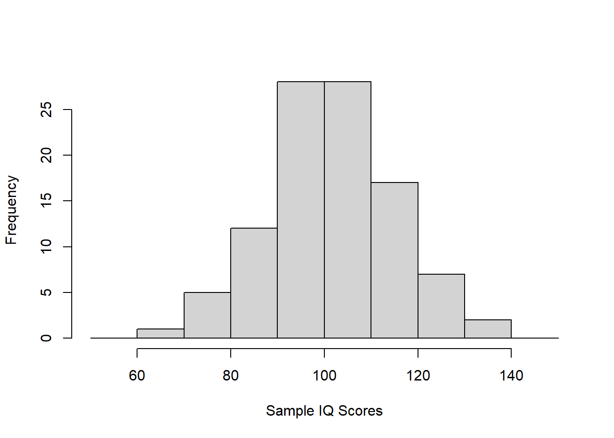
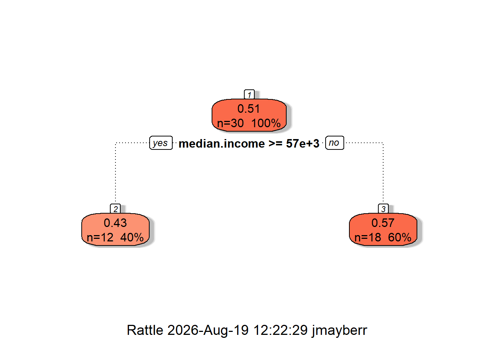
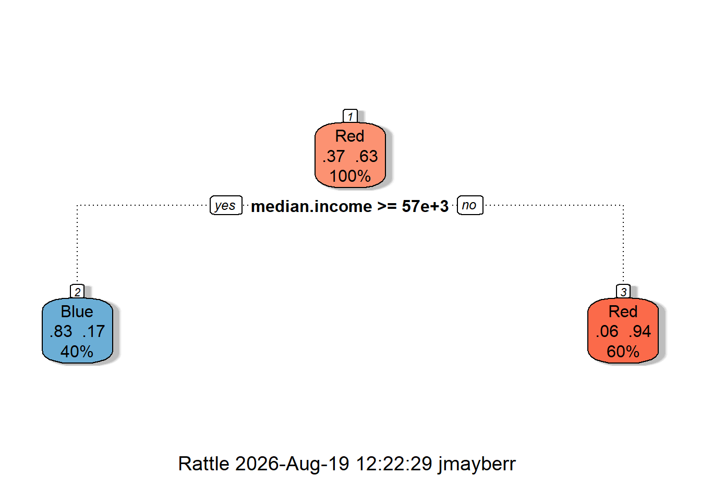
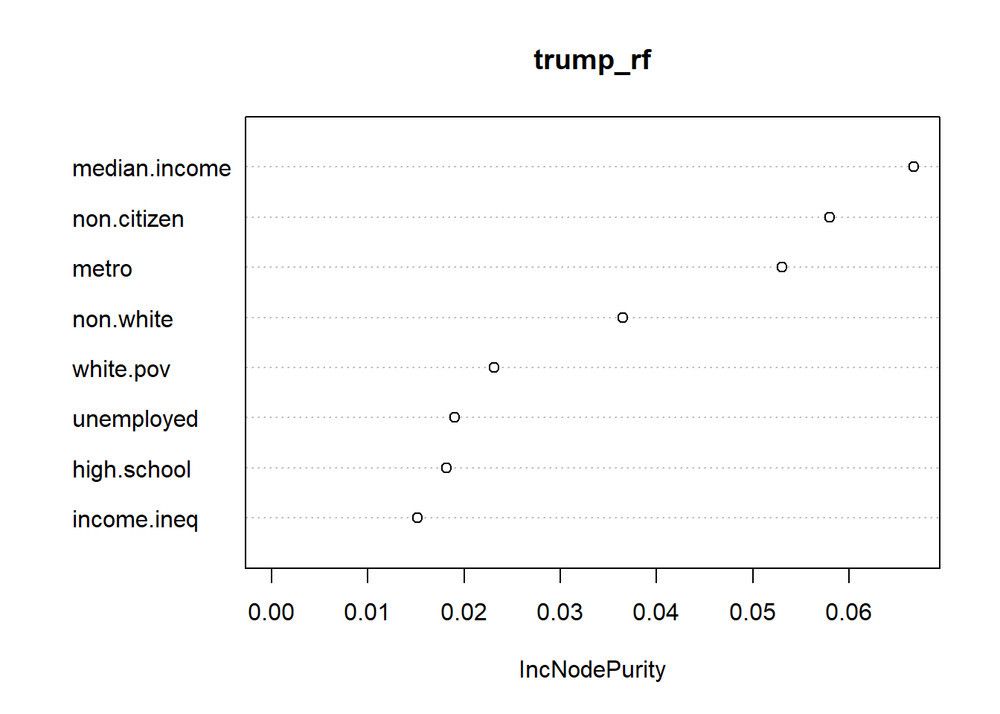

set.seed(1)
rand.IQ=rnorm(100,mean=100,sd=15)
hist(rand.IQ,xlab="Sample IQ Scores",main="",breaks=seq(50,150,by=10))
Bagging and random forests are both attempts to remedy the problem illustrated at the end of the last section by growing a large number of trees and assigning predictions to new values by averaging over all trees. Bagging is a special case of random forests and to understand either method, it is helpful to first discuss another important idea in statistics called bootstrapping. And to understand bootstrapping, we need to go back, back in time to the beginning of statistics and re-discuss the core concept of random sampling.
Suppose that we have a population in which a specific statistic (let’s say IQ scores) is normally distributed with a population mean of 100 and a population SD of 15. If we know this information ahead of time, then we can simulate a random sample of 100 IQ scores using a random number generator like
set.seed(1)
rand.IQ=rnorm(100,mean=100,sd=15)
hist(rand.IQ,xlab="Sample IQ Scores",main="",breaks=seq(50,150,by=10))
However, if we don’t know the population mean and SD (which is almost always the case in statistics), then we try to estimate them with the sample mean and Sd
Sample mean: 101.6333
Sample sd: 13.47299which are, of course, pretty close, but not exactly equal to the population values of 100 and 15. Usually we want to take this a step further and ask for the standard error of the sample mean, a measure of how close we believe the sample mean will be to the unknown population mean (see Module 1.3). If we assume that our sample is a true random sample (independent and identically distributed draws from the population of interest), the we can compute the standard error of the sample mean from standard probability theory (C…L….T!) via the formula \[ SE \approx s/\sqrt{n} \] or in our example:
We can then use this SE to compute confidence intervals for the unknown population mean. For example an approximate 95% CI has endpoints \(\bar{x} \pm 2*SE\):
This means that we are 95% confident that the population mean lies between 98.94 and 104.33 based on our sample.
But there are many sample statistics whose SEs are not provided by such nice formulas. One simple example is the sample median1. Say we want to know how accurately the median of our sample predicts the median of the population. Without a formula, what do we do?
To answer this question, recall the the standard error is actually a standard deviation of the sampling distribution of a sample statistic (Phew, that’s a mouthful). In other words, if 1000 different people all drew samples of size 100 from our IQ population and each computed a sample median, the standard error would be the standard deviation of the medians obtained. We can simulate this experiment in R using the replicate function
This last number is an approximation of the SE for the sample median of 100 observations in our population. (Note: The role played by the 100 and the 1000 is quite different in this example. The 100 is the sample size; the number of people each researcher is allowed to check. The 1000 is the number of replicates; the number of independent experiments performed. If you reverse their roles, you will get very different results).
Now most researchers don’t have the time or resources to select 1000 different samples of size 100. Instead, they get one sample of size 100. Boostrapping is the idea that since we are already using this sample of size 100 to estimate population statistics, we might as well take it a step further and use it as a representation of the population itself. So instead of drawing 1000 samples of size 100 from the whole population, we draw 1000 samples of size 100 WITH REPLACEMENT from the sample. These are called bootstrapped (re)samples2 Since our statistics should be as spread out in the sample as they are in the population, we can use the SEs from the bootstrap samples to estimate the true SEs.
Here is an example based on our previously drawn sample of 100 IQ scores
[1] 2.117081Not too far off from the SE we computed based on the actual population!
The cool thing about bootstrapping is that it can be applied to estimate the SE of ANY sample statistic, no matter how complicated. That includes the SE of parameters in statistical models, which is the idea behind bagging.
Bagging is basically the concept of bootstrapping applied to trees: we fit a large number of trees (the default in most program is 500) to a series of bootstrapped samples. For example, with the election2016 data, we would take 50 random samples of states (with replacement), fit a tree, then select another random sample, fit a tree, and continue 500 times in total. At the end, we would obtain a whole bunch of trees and if we receive a new observation, we can assign it a predicted value (regression problem) or class (classification problem) based on the average assignment across all of them.
The only difference between bagging and random forests is that the latter restricts the number of variables, \(m\), that you are allowed to use in each attempted split. This \(m\) is a hyperparameter in the random forest model and when \(m=p\), we get bagging. The reason for NOT choosing \(m=p\) is to de-correlate the constructed trees and allow each variable a chance to shine.
To explain the last comment, suppose that there is one variable which dominates the tree fitting procedure like non.citizen in the election2016 example. This variable will likely show up in all trees and hence, these trees will be highly correlated. There are several other variables which may be useful surrogates for non.citizen (like metro and non.white), but which will not be displayed as important due to the fact that non.citizen steals their glory. However, if we randomize the number of predictors we try during each tree, these other variables will sometimes be present without non.citizen and show up in at least some fraction of the fitted trees.
As another explanation from a probability perspective, suppose that we have \(n\) identically distributed random variables \(X_1,...,X_n\), each with variance \(\sigma^2\). Then the variance of their sample mean \(\bar{X}\) will be \(\sigma^2/n\) if they are independent. Therefore, in the independent case, averaging our responses leads to a huge reduction in variance. However, if the \(X_i\) are not independent, then \[ Var(\bar{X}) = \sum_{i,j=1}^n Cov(X_i,X_j)/n^2 \] This might look better at first glance because of the \(n^2\) in the denominator, but then you must realize that the double sum has \(n^2\) terms as well so if the covariances are all positive, then we will not get much reduction in variance from averaging.
Conceptual rambling aside, let’s take a look at some examples in R
We will be using the randomForest package to fit random forests3. Please install that package before running the codes below. In addition, let’s use 30 states for a training set and the remaining 20 for test
Then we will fit both a regression tree on trump:
library(rpart)
library(rattle)
trump_tree=rpart(trump.vote~.,data=train_set[,2:10])
fancyRpartPlot(trump_tree,palettes=c("Reds"))
and a classification tree for election outcome
outcome_tree=rpart(outcome~.,data=train_set[,c(2:9,11)])
fancyRpartPlot(outcome_tree,palettes=c("Blues", "Reds"))
Wow, those are surprisingly boring and probably not that good for prediction. Let’s try anyways. First, root MSE (RMSE) for the test data
and second, the error for the classification model
pred_class=predict(outcome_tree,test_set,type="class")
sum(pred_class!=test_set$outcome)/length(test_set$outcome)[1] 0.35Now let’s try bagging. The argument “mtry = 8” means to use all \(p=8\) predictors:
Let’s look at the regression result first4
[1] 0.06145483Better than the tree based model! For classification:
pred_bag_class=predict(outcome_bag,test_set,type="class")
sum(pred_bag_class!=test_set$outcome)/length(test_set$outcome)[1] 0.3Well…that was actually a little worse than the single tree. But remember, the predictors are highly correlated so we might not get much reduction in variance for bagging in this case. Let’s try a random forest model with the default values of \(m=3\).
For regression diagnostics
[1] 0.06273066Ok, not much better than bagging, but close. What about classification?
pred_rf_class=predict(outcome_rf,test_set,type="class")
sum(pred_rf_class!=test_set$outcome)/length(test_set$outcome)[1] 0.2That time we did a little better; it looks like the de-correlation of variables helped in this example.
The moral here is that bagging and/or random forests can lead to some gains in predictive ability for regression and classification problems by reducing the variance of the resulting model via bootstrapping. But another advantage is that they can be used to measure the relative importance of all the features in your model.
There are two other helpful outputs from a bag or random forest model. The first is variable importance. For a regression model, the _variable importance) of each predictor is calculated as the average reduction in MSE (called “IncNodePurity” in R) whenever that variable was used in a split. For our regression random forest, you can get these using either of the following commands:
IncNodePurity
median.income 0.06672638
unemployed 0.01903721
metro 0.05306040
high.school 0.01814789
non.citizen 0.05794949
white.pov 0.02310844
income.ineq 0.01515676
non.white 0.03646641
So the top five are median.income, non.citizen, metro,non.white, and white.pov. Note that the potential surrogates for non.citizen (metro and non.white) are given some props. That is the advantage of focusing on the whole forest! Also, you can see some advantages of the forest over plain bagging by comparing relative importance of variables:
Here metro and non-white are much less important than non.citizen whereas the differences in variable importance from the random forest model were smaller.
A second output of importance is the Out-of-Bag (OOB) error estimates. One advantage of bootstrapping is that you only use PART of your sample in each fit. In fact, one can show with some basic probability that if \(n\) is large, each observation will be left out of about \(e^{-1} \approx\) 0.3678794 of all samples5. Whenever a sample is left out of a particular fit, it is said to be Out-of-Bag. You can estimate the average test error of your model by computing the average error made for all OOB samples. Its like a built in cross-validation mechanism!
You can verify my claim about the average fraction of times that a particular sample is left out by using the oob.times output
# oob.times gives a list of how many times each observation was left out of the bootstrap sample
mean(trump_rf$oob.times)/500[1] 0.3586You can also get the OOB estimate of the MSE by printing the output of your random forest
Call:
randomForest(formula = trump.vote ~ ., data = train_set[, 2:10], mtry = 3)
Type of random forest: regression
Number of trees: 500
No. of variables tried at each split: 3
Mean of squared residuals: 0.007479973
% Var explained: 29.92The %Var explained is a “pseudo” \(R^2\) similar to the usual \(1-SSE/SST\) where \(SSE\) is the residual sum of squares for the OOBs. Note that using the MSE of 0.007 from the output, we have \(RMSE = \sqrt{MSE} \approx\) 0.083666, which is close to test RMSE from before.
For classification problems, the OOBs give you a confusion matrix and overall estimate of the error rate:
Call:
randomForest(formula = as.factor(outcome) ~ ., data = train_set[c(2:9, 11)], mtry = 3)
Type of random forest: classification
Number of trees: 500
No. of variables tried at each split: 3
OOB estimate of error rate: 30%
Confusion matrix:
Blue Red class.error
Blue 6 5 0.4545455
Red 4 15 0.2105263You can see here that the overall error rate is 30% while the recall and specificity are \(1-0.4545\) and \(1-0.2105\), respectively (if we assume Blue is the positive class; otherwise reverse those numbers).
Note that since random forests have the built in cross-validation functionality, when you have a smaller dataset, it might be better to use the whole dataset as the training data and just use the OOB stats to avoid overfitting. Just out of curiosity, if we refit the outcome model to the whole data:
Call:
randomForest(formula = as.factor(outcome) ~ ., data = election2016[c(2:9, 11)], mtry = 3)
Type of random forest: classification
Number of trees: 500
No. of variables tried at each split: 3
OOB estimate of error rate: 28%
Confusion matrix:
Blue Red class.error
Blue 13 7 0.3500000
Red 7 23 0.2333333we end up with an OOB error rate of about 28% and a higher specificity than recall (blue states are apparently harder to predict).
Random forests are bootstrapped trees and will exhibit reduced variances in their predictions as a result of the repeated sampling process. The disadvantage is that you get a kind of black box where you quite literally “lose the tree for the forest”, but by using the whole forest you get a better picture of what to expect from new growth and a better understanding of which variables are important. Ideally, I would recommend trying both and seeing how they complement each other in any given application. Trees are pretty to look at on their own, but the forest is richer in predictive value.
Recall the palmerpenguins package from the Module 6.2 practice problems. Load this package into R and work with the penguins dataset to answer the questions below.
set.seed(55) for consistency.Actually, Laplace did derive an asymptotic formula for this, but it is not common “intro to stats”” knowledge or even common professor of stats quick recall knowledge.↩︎
The name was introduced in Efron’s 1979 paper on the “Bootstrap Method” when he comparing the process to the old phrase “pulling oneself up by one’s boostraps”. It seems like an impossible task to estimate the standard error of a statistic without more knowledge of the population and yet that is just what we do with this method.↩︎
There is a newer package called ranger that has some advantages in terms of computational speed, efficiency, and handling missing values and also the default engine for tidymodels, but randomForest has been around longer so we’ll start there.↩︎
Note: If you do decide to use the ranger package, the predictions are stored in a different structure so you would need to do predict(trump_bag, data = test[, 2:10])$predictions instead.↩︎
Here is a short proof. In any particular bootstrap taken from a sample of size \(n\), the probability that a particular observation \(k\) is not selected is \((1-1/n)^n \to e^{-1}\) as \(n \to \infty\).↩︎